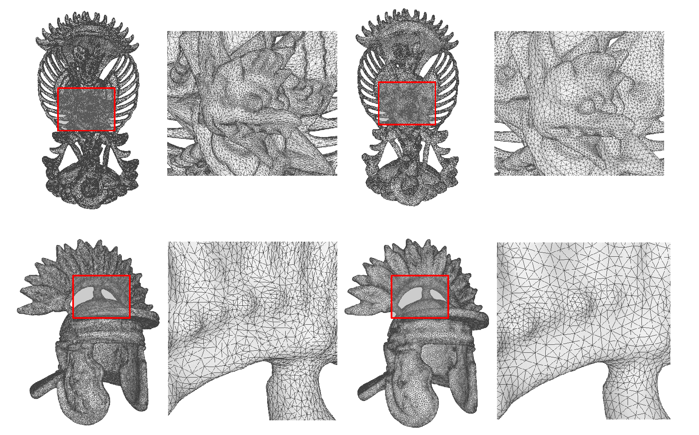
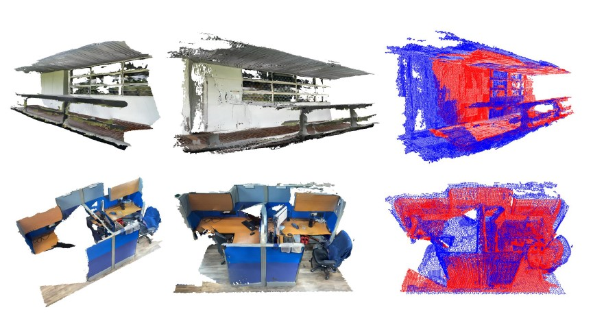
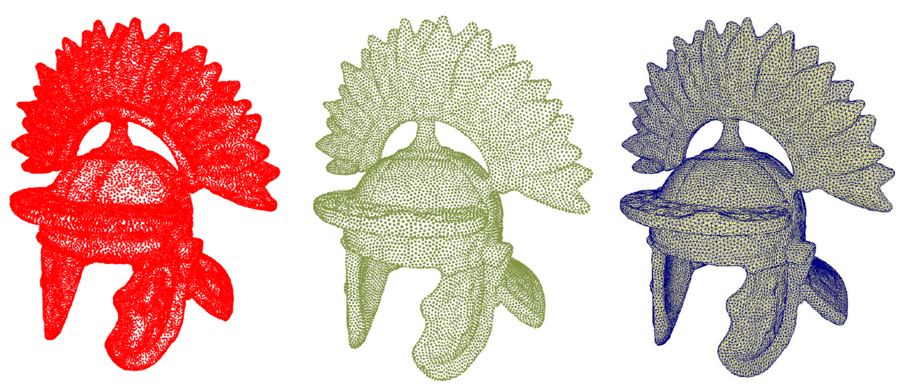
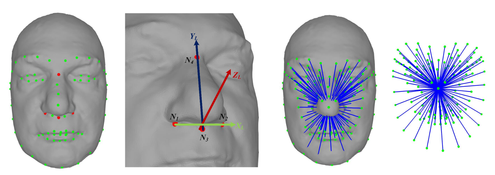
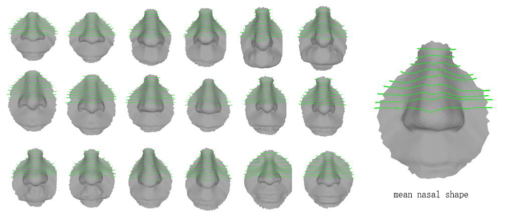

Publications
2024

Saliency Guided Deep Neural Network for Color Transfer with Light Optimization
Yuming Fang, Pengwei Yuan, Chenlei Lv, Chen Peng, Jiebo Yan, Weisi Lin
Improved Text-Driven Human Motion Generation via Out-of-Distribution Detection and Rectification
Yiyu Fu, Baoquan Zhao, Chenlei Lv, Guanghui Yue, Ruomei Wang, and Fan Zhou2023

MSL-Net: Sharp Feature Detection Network for 3D Point Clouds
Xianhe Jiao, Chenlei Lv, Ran Yi, Junli Zhao, Zhenkuan Pan, Zhongke Wu, Yongjin Liupdf| project

Color Transfer for Images: A Survey
Chenlei Lv, Dan Zhang, Shengling Geng, Zhongke Wu, Hui Huang
LAPTRAN: Transformer Embeding Graph Laplacian for Point Cloud Part Segmentaion
Abiao Li, Chenlei Lv, Yuming Fang, Yifan Zuo
A Subdivision-based framework for Shape Reconstruction
Shaolong Liu, Na Liu, Chenlei Lv, Dan Zhangpdf| project

Robust 3D Craniofacial Landmarks Localization by An End-to-End Regression Network
Xianhe Jiao, Junli Zhao, Chenlei Lv, Fuqing Duan, Zhenkuan Pan, Xin Li
GCFAgg: Global and Cross-view Feature Aggregation for Multi-view Clustering
Weiqing Yan, Yuanyang Zhang, Chenlei Lv, Chang Tang, Guanghui Yue, Liang Liao, Weisi Lin2022

Adaptively Isotropic Remeshing based on Curvature Smoothed Field
Chenlei Lv, Weisi Lin, Jianmin Zheng.pdf| code

KSS-ICP: Point Cloud Registration based on Kendall Shape Space
Chenlei Lv, Weisi Lin, Baoquan Zhao.pdf| project| code

Intrinsic and Isotropic Resampling for 3D Point Clouds
Chenlei Lv, Weisi Lin, Baoquan Zhao.pdf| code
2021

Approximate Intrinsic Voxel Structure for Point Cloud Simplification
Chenlei Lv, Weisi Lin, Baoquan Zhao.pdf| code

Fine-Grained Patch Segmentation and Rasterization for 3D Point Cloud Attribute Compression
Baoquan Zhao, Weisi Lin, Chenlei Lv.
Voxel Structure-based Mesh Reconstruction from a 3D Point Cloud
Chenlei Lv, Weisi Lin, Baoquan Zhao.pdf| project| code
2020

3D non-rigid shape similarity measure based on Frechet
distance between spectral
distance distribution curve
Dan Zhang, Zhongke Wu, Xingce Wang, Chenlei Lv, Mingquan
Zhou.
3D skull and face similarity measurements based on a harmonic wave kernel signature
Dan Zhang, Zhongke Wu, Xingce Wang, Chenlei Lv, Na Liu.
3D Face Modeling From Single Image Based On Discrete Shape Space
Dan Zhang, Chenlei Lv, Na Liu, Zhongke Wu, Xingce Wang.

3D Facial Similarity Measurement and Its Application in Facial Organization.
Chenlei Lv, Zhongke Wu, Xingce Wang, Mingquan Zhou.
Ethnicity classification by the 3D Discrete Landmarks Model measure in Kendall shape space.
Chenlei Lv, Zhongke Wu, Xingce Wang, Zhang Dan, Mingquan Zhou.2019

3D facial expression modeling based on facial landmarks in single image.
Chenlei Lv, Zhongke Wu, Xingce Wang, Mingquan Zhou.
Constructing 3D facial hierarchical structure based on surface measurements.
Chenlei Lv, Zhongke Wu, Xingce Wang, Mingquan Zhou.pdf| code

Nasal similarity measure of 3D faces based on curve shape space.
Chenlei Lv, Zhongke Wu, Xingce Wang, Mingquan Zhou, Kar-Ann Toh.
3D Nose shape net for human gender and ethnicity classification.
Chenlei Lv, Zhongke Wu, Dan Zhang, Xingce Wang, Mingquan Zhou.
A Harmonic Wave Kernel Signature for Three-Dimensional Skull Similarity Measurements.
Dan Zhang, Zhongke Wu, Xingce Wang, Chenlei Lv, Mingquan Zhou.
Survey on shape descriptors based on spectral analysis for non-rigid 3D shape matching
Dan Zhang, Zhongke Wu, Xingce Wang, Chenlei Lv, Xiangyuan Liu, Mingquan Zhou.2018

3D Face Recognition based on Local Conformal Parameterization and Iso-Geodesic Stripes Analysis
Chenlei Lv, Junli Zhao.
Facial Expression Editing in Face Sketch Using Shape Space Theory.
Chenlei Lv, Zhongke Wu, Xingce Wang, Dan Zhang, Xiangyuan Liu, Mingquan Zhoupdf| project

A Patch Analysis Based Repairing Method for Two Dimensional Fiber Spectrum Image.
Xin Zheng, Chenlei Lv, Qian Yin, Ping GuoBefore...

A GPU-based statistical image up-sampling method by using edge templates.
Xin Zheng, Chenlei Lv, Qingqing Xu, Peipei Pan, Ping Guo.